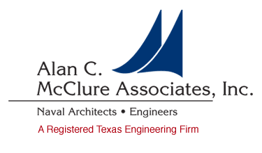
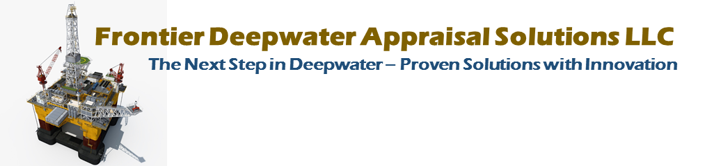
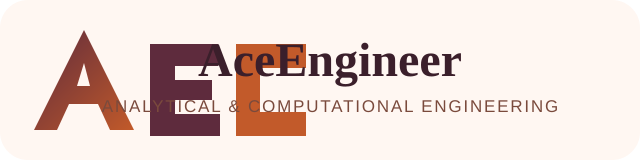
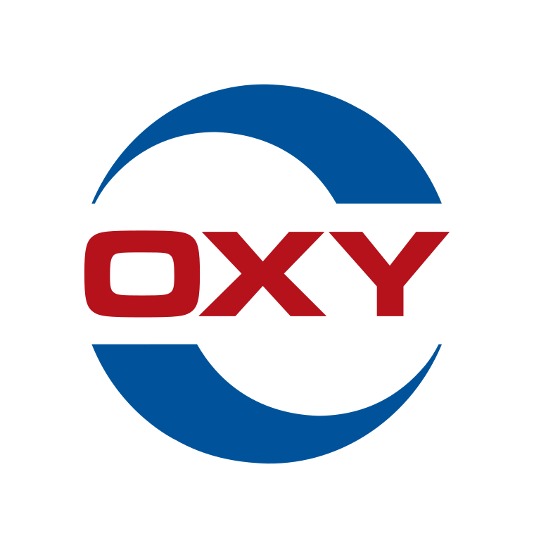

VAMSEE ACHANTA, P.E.
Naval Architect | Subsea & Marine Systems Engineering Leader | Digital Transformation Executive
Email: vamsee.achanta@aceengineer.com | Phone: 713-306-9029
LinkedIn: linkedin.com/in/vamseeachanta | GitHub: github.com/vamseeachanta | Location: Houston, TX
Professional Profile
Marine/offshore engineering leader with 23+ years of experience in naval architecture, subsea systems, risers, pipelines, umbilicals, moorings, installation engineering, integrity management, and engineering automation. Professional Engineer in Texas with a track record leading high-consequence offshore work from concept/FEED through detailed analysis, installation support, operations, and emergency response.
Combines hands-on technical authority in OrcaFlex, AQWA, OrcaWave, ANSYS, Abaqus, and COMSOL with Python/SQL automation and data-science experience. Known for converting complex engineering workflows into repeatable digital tools, digital twins, and production-grade analytics that reduce analysis cycle time, improve quality, and support faster project decisions.
Positions
| Period |
Role |
Organization |
Focus |
| Dec 2023 – Present |
Naval Architect |
Alan McClure & Associates, Houston, TX |
Coupled marine global analysis, diffraction, moorings; WoodFibre LNG FST terminal design |
| Jun 2016 – Present |
VP of Engineering / Co-Founder |
Frontier Deepwater Appraisal Solutions (FDAS), Houston, TX |
Deepwater production concepts, riser/mooring systems, GoM field economics |
| Jun 2012 – Present |
Engineering Lead Consultant |
AceEngineer (independent practice), Houston, TX & Remote |
Subsea/riser/installation analysis, FEA, fitness-for-service, digital twins, open engineering & AI tooling |
| Sep 2017 – Dec 2020 |
Engineering SME, Data Science Team |
Occidental Petroleum, Houston, TX & Remote |
Physics-based production/drilling analytics across ~20,000 wells |
| Aug 2003 – Jun 2015 |
Engineering Lead |
2H Offshore Inc, Houston, TX |
Riser design & integrity, 100+ projects, BP Macondo containment riser response, API standards |




Roles from 2012 onward run concurrently; project-level detail for each position follows on the next pages.
Career Highlights
- Emergency response leadership: Engineering Manager for BP Macondo containment riser response; delivered a complete containment riser design in 8 weeks by repurposing existing assets.
- Major LNG terminal analysis: WoodFibre LNG Terminal design (British Columbia, $1.8B) — dual Floating Storage Terminals, shore mooring, LNG carrier berthing/fender interaction, extreme-weather assessment.
- Subsea and riser authority: 100+ offshore riser and subsea projects across Gulf of Mexico, West Africa, Asia-Pacific, Guyana, and Venezuela for BP, Shell, Chevron, ExxonMobil, ENI, Murphy, Reliance, Talos, and others.
- Digital transformation: Python/API-driven automation and digital twins for OrcaFlex, AQWA, OrcaWave, ANSYS, COMSOL, BSEE field economics, drilling analytics, production surveillance, and fitness-for-service.
- Open, demonstrable engineering & AI: Live public tools — worldenergydata (GoM field economics & well analytics on BSEE data) and digitalmodel (open offshore engineering library) — deterministic, unit-tested, provenance-traced.
- Standards and technical credibility: API committee participant/contributor for API-RP-16Q, API-RP-17G, and API-RP-17G2; author/co-author for OTC, OMAE, IADC, and World Oil.
Education & Credentials
Master of Science, Mechanical Engineering — Texas A&M University, College Station, TX
Bachelor of Technology, Mechanical Engineering — Indian Institute of Technology (IIT), Madras, India
Professional Engineer (P.E.) — Texas
API Standards Committee Experience: API-RP-16Q, API-RP-17G, API-RP-17G2
Core Competencies
Marine & Subsea Engineering: Naval architecture, floating systems, FST/FPSO/FPU concepts, LNG marine operations, risers (SCR, TTR, hybrid, lazy-wave, simple catenary), pipelines, umbilicals, jumpers, manifolds, moorings, CALM/SALM buoys, installation engineering, integrity management, decommissioning.
Analysis & Simulation: Coupled dynamic analysis, diffraction/radiation analysis, mooring analysis, time-domain simulations, global riser analysis, pipelay and installation windows, detailed FEA, nonlinear elastic-plastic analysis, fracture mechanics, fatigue, corrosion simulation, hydrodynamics, operability assessment.
Software & Automation: OrcaFlex / OrcFxAPI, AQWA, OrcaWave, ANSYS, Abaqus, COMSOL, Flexcom, Python, SQL, Git, Azure DevOps, pandas, NumPy, Matplotlib, Plotly/D3JS, API-driven model generation, batch execution, automated post-processing, engineering dashboards; AI/LLM-augmented engineering workflows and agentic automation, deterministic zero-server static web delivery (GitHub Pages).
Standards & Governance: API-RP-16Q, API-RP-17G, API-RP-17G2, API 579-1 / ASME FFS-1, BS 7910, DNV offshore recommended practices, ASME VIII, engineering assurance, contractor deliverable review, design basis development, technical risk assessment.
Leadership: Engineering team leadership, mentoring, client-facing technical advisory, project management, contractor coordination, proposal support, business development, emergency response, cross-functional engineering/data-science integration.
Professional Experience & Project Detail
Naval Architect, Alan McClure & Associates
Dec 2023 – Present | Houston, TX
- WoodFibre LNG Terminal Design — British Columbia ($1.8B project): Performed detailed marine global analysis for two Floating Storage Terminals berthed side-by-side in approximately 35 m water depth, including coupled FST/shore-mooring analysis for extreme weather, FST/LNGC/fender/mooring interaction checks for operating conditions, mooring support for LNG carriers up to 180,000 m³, and AQWA/OrcaWave/OrcaFlex workflows for diffraction, hydrodynamics, mooring, and coupled global analysis.
- Diffraction and mooring failure investigations: Performed AQWA/OrcaWave diffraction analysis and OrcaFlex global analysis for moored barges to evaluate mooring line failure mechanisms in extreme weather.
- Tug floundering / passing-ship analysis: Investigated tug boat floundering due to passing ship effects using time-domain OrcaFlex analysis to assess tug motions and operational risk.
- Digital transformation and analysis automation: Developed Python/API-based digital twins for hull diffraction workflows in AQWA/OrcaWave and mooring analysis workflows in OrcaFlex using OrcFxAPI, automated model creation, execution, result extraction, and engineering plot/report generation.
VP of Engineering / Co-Founder, Frontier Deepwater Appraisal Solutions (FDAS)
Jun 2016 – Present | Houston, TX
- Lead concurrent venture-backed engineering and technology development for deepwater field development concepts, riser/mooring systems, field economics, technical marketing, and operator engagement.
- 6000 ft water-depth semisubmersible production vessel concept: Led feasibility and concept evaluation for converting idle 6th-generation drillships into production assets; delivered riser support, mooring, and hurricane-condition analysis to support cost-effective development decisions.
- GoM field economics analytics platform: Built SQL/Python analytics platform using BSEE data for 200+ Gulf of Mexico fields, reducing field evaluation time from weeks to days and supporting stranded-asset opportunity screening.
- SEWOL salvage ship critical analysis: Delivered emergency hull FEA analysis within 72 hours for Korean government salvage support; automated ANSYS workflows using Python to accelerate model execution and reporting.
- Developed technical visualizations and digital engineering collateral for operator meetings, proposal support, and strategic business development.
Engineering Lead Consultant, AceEngineer (Independent Consulting Practice)
Jun 2012 – Present | Houston, TX & Remote
- Provide concurrent specialist offshore/subsea engineering consulting for major operators and engineering contractors, covering installation analysis, risers, pipelines, umbilicals, structural FEA, corrosion, and fitness-for-service.
- Circular BOP design and analysis: Performed detailed nonlinear and elastic-plastic ANSYS FEA of seals, connectors, annulus seals, drill pipe seals, and metal/elastomer component behavior.
- Subsea structure installation analysis: Performed installation analyses for manifolds, PLETs, flexible products, umbilicals, rigid jumpers, and subsea structures.
- 42-inch thin-walled subsea pipeline installation — Venezuela: Executed detailed FEA to determine bending moment capacity for D/t = 67 pipe outside standard DNV code regime; performed OrcaFlex pipelay analysis and automated results/plots via Python/API workflows.
- ExxonMobil Yellowtail installation analysis — Guyana: Analyzed dynamic and static umbilical installation in approximately 6,000 ft water depth; evaluated 100+ load cases and installation windows to reduce execution risk.
- Talos Venice Limerock static umbilical installation: Assessed static umbilicals from subsea manifold to subsea tree in approximately 1,050 m water depth, including static installation tables and dynamic wave/current limits.
- Chevron Ballymore installation analysis: Performed dynamic and resonance analysis for rigid jumpers and manifolds to support installation planning.
- Riser digital twin platform: Implemented database-driven automation for drilling risers, top-tensioned risers, lazy-wave catenary risers, simple catenary risers, global riser analysis, API 579 fitness-for-service, and BS 7910 fatigue/fracture mechanics workflows.
- Trendsetter intervention system: Supported intervention system design for water depths from 1,500 ft to 10,000 ft and pressures of 15,000–17,500 psi, including global riser analysis, connector/flange specifications, vessel stroke checks, and upper/lower riser configurations.
- Fitness-for-service automation: Built Python workflows using pandas, NumPy, Matplotlib, and D3JS for wall-thickness processing, defect identification, API 579-1/ASME FFS-1 assessments, and BS 7910 fracture mechanics.
- Mooring corrosion simulation: Modeled damaged subsea mooring line corrosion in COMSOL using fluid mechanics, mass transfer, diffusion, and electrochemical models; automated model processing with COMSOL Java API, MATLAB, and batch workflows.
- Open engineering & AI tooling: Built and shipped public, deterministic engineering sites and libraries — worldenergydata (live GoM field economics & well analytics on BSEE data: Lower-Tertiary NPVs, 56-well benchmarking, 3D well paths), digitalmodel (open offshore engineering library), and a Raw-to-Knowledge playbook — every result unit-tested and provenance-traced, delivered as zero-server static HTML, with AI/LLM as narrative support over deterministic cores.
Engineering SME for Data Science Team, Occidental Petroleum
Sep 2017 – Dec 2020 | Houston, TX & Remote
- Served as domain engineering lead bridging production engineering, drilling, data science, and software teams for large-scale analytics deployment.
- Production optimization platform: Deployed 50+ physics-based algorithms monitoring approximately 20,000 wells in real time with logging, exception handling, and production-support workflows.
- Real-time drilling analytics: Implemented bit-position estimation, torque/drag monitoring, rig-state logic, and edge-computing workflows supporting 20+ concurrent drilling campaigns.
- Production surveillance: Automated dynacard analysis, ESP surveillance, well-test validation, and time-shed analytics to improve exception-based operations and reduce manual review effort.
- Designed SQL data models, stored procedures, Python class libraries, analytics pipelines, dashboards, and validation routines for production-grade engineering analytics.
Engineering Lead, 2H Offshore Inc
Aug 2003 – Jun 2015 | Houston, TX
- Progressed through analyst, lead, manager, and technical authority roles for riser design, subsea systems, installation analysis, integrity management, and API standards work.
- BP Macondo emergency response: Engineering Manager for containment riser response; led 24/7 multidisciplinary engineering effort across multiple locations and delivered complete design in 8 weeks by repurposing existing assets.
- Chevron Bangka SCR/flexible riser FEED: Led FEED design for production risers in shallow-water development, optimizing riser configuration and installation strategy while delivering ahead of schedule.
- Major riser and integrity portfolio: Led or supported BP Thunder Horse, Atlantis, Horn Mountain; Chevron Jack/St. Malo; ENI Devils Tower; Reliance KG-D6; Shell/BP HPHT systems; and multiple Gulf of Mexico, West Africa, and Asia-Pacific developments.
- API standards contribution: Committee member/contributor for API-RP-16Q and related riser/structural standards.
- Managed client communication, technical reports, design reviews, team coordination, mentorship, and project delivery for 100+ assignments.
Selected Project Portfolio
- WoodFibre LNG Terminal: Dual FST global analysis, LNG carrier berthing, fender/mooring interaction, operational and extreme conditions.
- BP Macondo containment riser: Emergency engineering response, rapid design, existing asset repurposing, high-consequence delivery.
- ExxonMobil Yellowtail: Dynamic/static umbilical installation, 6,000 ft water depth, installation windows and load-case automation.
- Chevron Ballymore / Talos Venice Limerock: Rigid jumper, manifold, and static umbilical installation analysis.
- 42-inch Venezuela pipeline: Thin-walled pipeline bending capacity and pipelay analysis beyond standard DNV D/t regime.
- SEWOL salvage: Rapid-response hull FEA and automated ANSYS reporting for salvage operations.
- Drilling/riser digital twins: Automated OrcaFlex model generation, batch execution, results extraction, and API 579 / BS 7910 integrity workflows.
- worldenergydata (open): Live, deterministic Gulf of Mexico field-economics & well-analytics site on public BSEE data — Lower-Tertiary NPVs, 56-well benchmarking, interactive 3D well paths; unit-tested numbers with full provenance.
Selected Publications & Thought Leadership
- World Oil (2024): “Wellbay Innovation Supports Lower-Cost HP DW Discoveries”
- OTC (2017): “Heavy Lift Dynamics — Sewol Ferry Offshore Salvage”
- IADC (2015): Contributing Author, Floating Drilling Equipment and Operations, 12th Edition
- OMAE (2009): “Benchmarking SHEAR7v4.5: Full-Scale Drilling Riser VIV Data”
- World Oil Industry Reference (April 2026): “SF Offshore Technology—Shilling (Frontier Deepwater Appraisal Solutions LLC)”
Professional Affiliations
Society of Petroleum Engineers (SPE) | American Society of Mechanical Engineers (ASME) | Marine Technology Society (MTS) | API Standards Committees
Languages
English — Excellent | Telugu — Excellent | Hindi — Good
References
Available upon request.